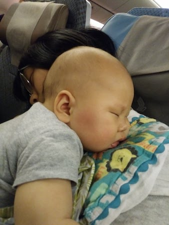
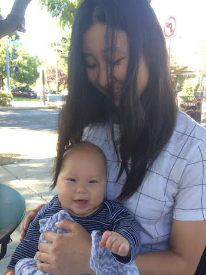
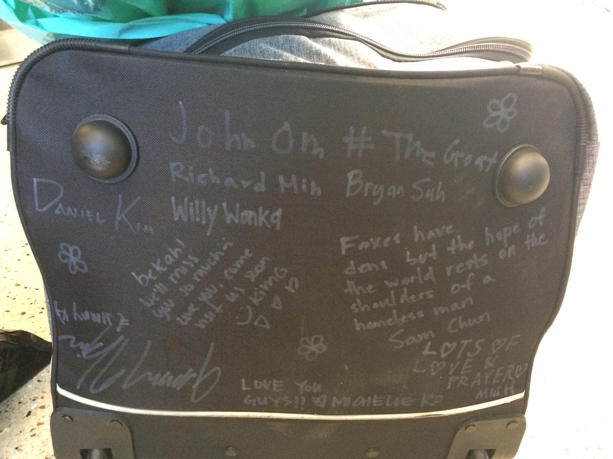
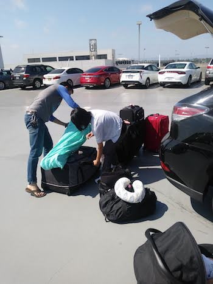

Giving Thanks
Now, brethren, we wish to make known to you the grace of God which has been given in the churches of Macedonia, that in a great ordeal of affliction their abundance of joy and their deep poverty overflowed in the wealth of their liberality. For I testify that according to their ability, and beyond their ability, they gave of their own accord, begging us with much urging for the favor of participation in the support of the saints, and this, not as we had expected, but they first gave themselves to the Lord and to us by the will of God.
2 Corinthians 8:1-5I hope to see you in passing, and to be helped on my way there by you, when I have first enjoyed your company for a while
Romans 15:24b
 On the plane Not to say that we are in the exact same situation as the Apostle Paul, but we wanted to start with those verses just to put this thanksgiving newsletter in context.
In the last update, we wanted to fill you guys in on the current situation of things, but this month we wanted to look back over the last couple months, especially in the end of July and the beginning of August, to all the ways that God has blessed us through his people in “sending us on our way”.
One verse in particular comes to mind when talking about why we want to share:
“For the ministry of this service is not only supplying the needs of the saints, but is also overflowing through many thanksgivings to God” (2 Cor 9:12)
We can, of course, give thanks to God by ourselves. However, we wanted to share the various ways that believers in every city we visited blessed us– and these are only the tangible ways!– in the hope that this report would likewise cause you to rejoice with us and give thanks to God on our behalf.
Before leaving Spokane, our church helped by:
- consistently asking us how they could help in any way weeks in advance of our move
- helping us pack and clean our apartment
- bringing us meals while we were packing
- One sister in Christ from out of town even offered to fly in, just to help watch Jonathan and help us move, and another brother in Christ offered to pay for her plane ticket! (Note that tickets to Spokane are not very cheap)
- helping pay some bills we owed to companies in Spokane after we had left
 Cousin Katie & Jonathan
Before leaving the States other believers:
- offered to handle our mail while we’re in Cambodia
- let us borrow his car while our car keys were AWOL
- shipped Jonathan’s baby clothes to LA when we left them in Oregon
- helped us plan and organize a gathering to spend with other brothers and sisters we hadn’t seen in a while
- helped to sell our car. Our original plan (CarMax) offered just $2000 for Rebekah’s Chevy Spark. But one brother posted the car on uncountable sites like Craigslist, AutoTrader.com, etc, and a sister posted on a Master’s Seminary alumni Facebook group. Another from our church in LA handled the calls/texts/emails coming in, and yet another offered to help sell the car for us if it hadn’t sold by the time we left. Ultimately the car sold $4500, over twice what we would have gotten otherwise!
- stored books and other boxes for us for an indefinite amount of time, until we can return and bring them to Cambodia with us. We are grateful to have a place to store things in Seattle and LA, and even more grateful that others offered too, but we had no more things to store!  They signed the suitcase, too! :)
- We were also sent off with some extra goodies, a preemptive care package of sorts. We initially asked them to not send us with anything, since we were limited on how many suitcases we could take with us, and our suitcases were full. Therefore they bought us a larger suitcase too.
- By the time we left the States, we had stayed with eight different families in eight different cities!
- Uncountable meals were provided as well. Desserts were also provided but though our mouths were grateful initially our bellies are still complaining. (Not really, but just to say that we were well provided for 😉)
- Opportunities to share about ministry in Cambodia to individuals, Bible studies, and churches.
- Pastors/elders and church leaders in the churches we visited not only prayed for us and advocated our cause for us to the saints in the churches, but also made extra time to catch up and to share their wisdom with us.
- God provided financially in many ways through the sacrificial giving of the Church
 At LAX with Sam - And finally, right before we left, a brother took a day off of work so that he could pick us up at the house we were staying and drop us off at the airport. It ended up being even more helpful then we originally thought, since we ran into some trouble at the airport (apparently you need either a visa or a return trip ticket before boarding…), and he was able to help out by watching the baggage etc. while we got it sorted out.
After arriving in Cambodia, our teammates:
- picked us up from the airport
- reserved a hotel room for us and bought essentials for us until we moved into our home
- found a very affordable house to live in and helped us move into the house
- shared meals with us which was helpful not only because we didn’t know where to go, but it also made transitioning less lonely and encouraging having been able to spend time with other believers.
- provided translation/advice in order to negotiate a contract with the landlord (which, for the uninitiated, is quite an involved process to say the least!)
- helped us buy furniture/housewares and gave us a lot to boot.
- drove an hour and talked to the internet company, and then later came over when the internet technician visited so we could get internet setup
- called mechanics etc.
- came over when two strangers walked in the gate.
Throughout everything, it is abundantly clear to us that God provided not just more than we need, but even more than we wanted. We are so grateful for the Believers in all these different cities, and not just for their love for us personally but their love for Christ and His mission here on earth and how God provided in so many different ways through that.